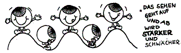

Termie unter:
Kennen Sie das? Die Augen schmerzen, brennen, tränen oder sind trocken und müde, es flimmert, z.B. nach einigen Stunden Arbeit vor dem Bildschirm. Unsere Augen sind sensitiv, sie reagieren auf Gefühle und anspannende Situationen unmittelbar. Deshalb ist die Sehkraft keineswegs unveränderlich, sie kann sich nicht nur verschlechtern, sondern ebenso verbessern.
Die Augen sind der Spiegel unserer Seele. Veränderungen in unserem Leben, Krankheiten und Lebensabschnitte, die emotional belastend oder traumatisch sind, wirken sich manchmal auf das Sehen aus. Ebenso können ungünstige Sehgewohnheiten und die Augen belastende Arbeitsbedingungen zu Sehschwächen führen, wie z.B. Hornhautverkrümmung (Astigmatismus), Weit- oder Kurzsichtigkeit, Schielen (Strabismus), Winkelfehlsichtigkeit, u.a. Die meisten Menschen haben wenig Zugang zu ihren Augen und spüren nicht, was sie brauchen. Wenn die Augen eine Schwäche zeigen und nicht mehr in der gewünschten Form funktionieren, wird ihnen eine Brille als Sehhilfe verordnet. Die Augen werden fixiert und in ihrer Beweglichkeit durch „ständiges Brille tragen“ eingeschränkt.
Spielend erobern wir uns natürliche Sehgewohnheiten zurück. Die Augen werden in ihren Bewegungen lockerer, beweglicher und besser durchblutet. Das wiederum unterstützt die Ernährung der Netzhaut und stärkt die Sehkraft. Ihre Augen kommen aus der Starrheit in ein energievolles Strahlen und mehr Lebendigkeit. Sie lernen aktiv zu Visualisieren und fördern mit gezielten Übungen die Zusammenarbeit zwischen Augen und Gehirnarealen.
In den Seminaren erleben Sie, was Sie selbst für Ihre Augen tun können, um ihre Sehfähigkeit zu stärken und zu erhalten. Die neuen erlernten Sehgewohnheiten und Seherfahrungen können in den täglichen Ablauf integriert werden, so das sie auch nach dem Seminar weiter ihre Wirkung haben. Sie aktivieren ihre Selbstheilungskräfte und erfahren einen liebevollen Umgang mit sich und ihren Augen.
Liebe Silvia,
ich bin gestern gut in Kleve angekommen. Ich schiele nicht mehr, kann noch nicht ganz scharf sehen.
Meine Brille - für das Autofahren - ist verschwunden. Mit dem Ende des Schielens ist die Brille weg. Es
gibt ja keine Zufälle.
"Ich bleibe dran" , denn nach rund 60 Jahren schielen , einer Augen-OP, vielen Augenarztbesuchen mit
weiteren OP-Empfehlungen und vielen Brillen ist das Ergebnis von deinem WE-Seminar super .Danke dafür .
Lieben Gruß
Heiko
Guten Tag liebe Silvia,
es war ein Wochenendseminar mit solch eindrucksvollen Überraschungen seit langem.
Es hat mich sehr beeindruckt, w i e mit diesem 'Handwerkszeug', welches du uns an die Hand gegeben hast,
innerhalb kurzer Zeit eine derart sicht- und spürbare Verbesserung zu erzielen ist und ich habe sie
fleißig weiterverfolgt.
Liebe Silvia, herzlichsten Dank und alles Liebe und Schöne für dich,
Sophie
Liebe Silvia,
kaum zu glauben, wie schnell das Wochenende mit Deinem Augenkurs vorbei flog...
Der spielerische Zugang, um die Augen zu entspannen, hat mir sehr gefallen,auch die kleine Gruppe, in
der wir im "Augen Umdrehen" miteinander vertraut wurden.
In der Mischung aus Spiel und Spaß und der Ernsthaftigkeit der kinesiologischen Arbeit, hast Du ein
lehrreiches Umfeld erschaffen, in dem ich mich öffnen und neue Erfahrungen machen konnte.
Zurück vom Augenkurs, kramte ich meine schwächeren Brillen heraus und posauniere nun mit besten
Vorsätzen. Von Herzen Dank für Deine Kompetenz.
Herzliche Grüße von Christiane